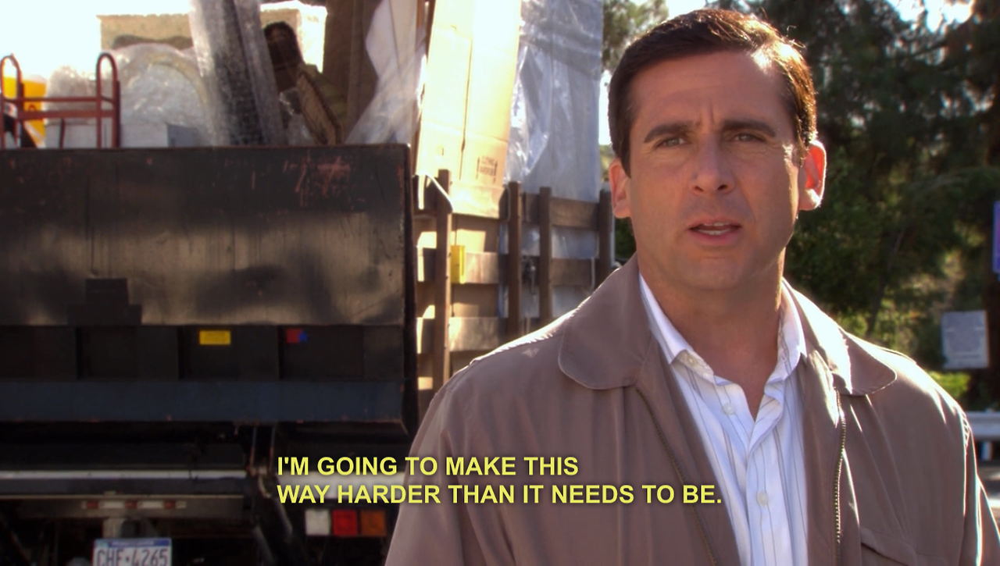
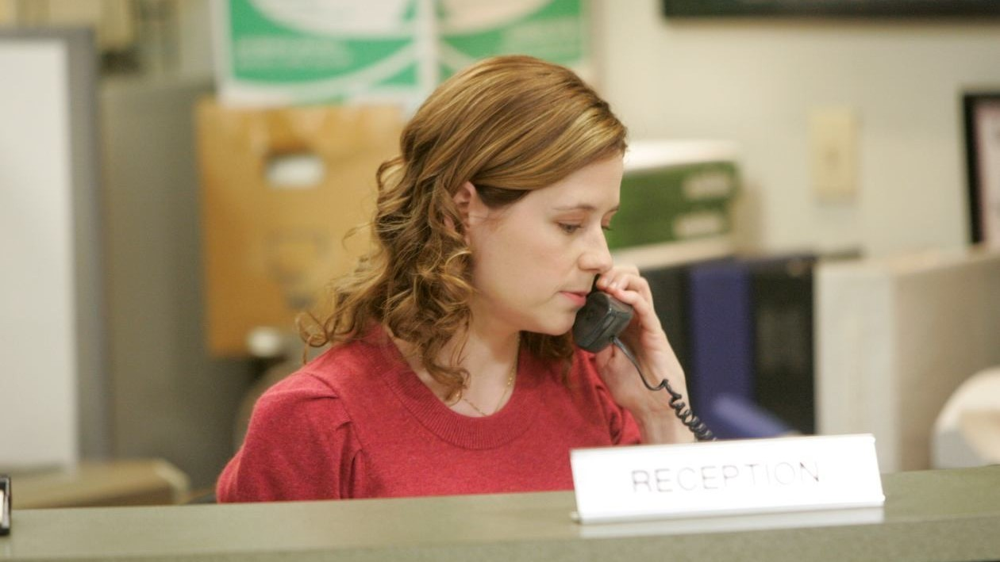

Welcome
The Office is an American mockumentary sitcom television series that depicts the everyday work lives of office employees at the Scranton, Pennsylvania, branch of the fictional Dunder Mifflin Paper Company.
Identity theft is not a joke, Jim! Millions of families suffer every year.

Micheal Scott
Apart from his masterful salesmanship, Michael is lacking in almost any other skills, management or otherwise. Jim Halpert once made a color graph of how Michael spends his time: 80% distracting others; 19% procrastination; and 1% critical thinking. Jim added that he inflated the "critical thinking" percentage so people could actually see it on the graph.
When you’re a kid, you assume your parents are soulmates. My kids are going to be right about that.
Dwight Schrute
When the series begins, Dwight Schrute is a competent salesman at the Dunder Mifflin, Scranton branch. Dwight formally held the title of "Assistant to the Regional Manager", but constantly refers to himself as "Assistant Regional Manager", attempting to elevate himself to second-in-command to branch Manager, Michael Scott. Dwight craves authority over his co-workers and relishes any minor task that Michael or anyone else will give him.
You miss 100% of the shots you don't take.
- Wayne Gretzky

Pam Beesley
From her years working the front desk, Pam has become well-acquainted with the Dunder-Mifflin staff and is consistently shown to have a thorough understanding of her coworkers' personalities, including the more eccentric individuals Dwight Schrute and Michael Scott. She uses this familiarity to manipulate them, often for their and the company's best interests but also occasionally for her own. This familiarity plays a large part in her efficiency as office administrator and was crucial to her being promoted to the previously non-existent position.